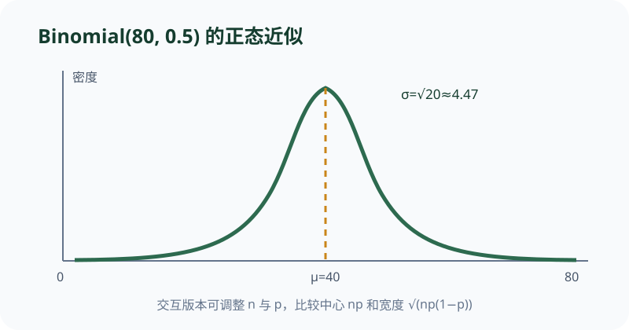

调节 n 与 p，比较中心 np 和宽度 √(np(1−p)) 如何共同改变近似曲线。
依据本地课程资料 discussion/dis13b.pdf 与 homework/hw14.pdf 重绘；交互用于解释概念，不替代题面或证明。

CS70 · 第 13 讲
本讲把离散概率的工具推广到连续随机变量：从 PDF/CDF 的定义与相互关系出发，研究均匀、指数、高斯三大分布及其变换；通过 Buffon 投针、飞镖、随机整数互素三种 π 估计方案，比较 Chebyshev 与 CLT 在样本量估计上的差异；最后借助单尾 Cantelli 界与指数分布的无记忆性，分析等待时间与竞争最小值问题。
连续随机变量 \(X\) 由累积分布函数（CDF） \[ F_X(x) = \mathbb{P}[X \le x], \qquad x \in \mathbb{R} \] 完全刻画。若 \(F_X\) 绝对连续，则存在概率密度函数（PDF）\(f_X\) 使得 \[ F_X(x) = \int_{-\infty}^{x} f_X(t)\,dt, \qquad f_X(x) = \frac{d}{dx}F_X(x) \text{ (几乎处处成立)}. \]
PDF 必须满足两条充要条件： \[(1)\ f_X(x) \ge 0 \ \text{对所有 } x; \qquad (2)\ \int_{-\infty}^{\infty} f_X(x)\,dx = 1.\] 注意 PDF 在某点的取值不是概率，而是概率密度；只有区间积分才是概率： \[ \mathbb{P}[a \le X \le b] = \int_a^b f_X(x)\,dx = F_X(b) - F_X(a). \] 因此 PDF 在单点可以大于 1（例如均匀分布 Uniform\([0,\ell]\) 在 \(\ell < 1\) 时密度为 \(1/\ell > 1\)）。
反过来，CDF 必须满足：(1) 非减；(2) 右连续；(3) \(\lim_{x\to -\infty}F(x)=0,\ \lim_{x\to\infty}F(x)=1\)。一个函数即便取值在 \([0,1]\) 且单调，若在无穷远处极限不是 1，仍不是合法 CDF（如 DIS 13A 第 1 题的 \(f(x)=2x\) 在 \([0,1]\) 是 PDF 而非 CDF）。
期望与方差仍按连续版公式计算： \[ \mathbb{E}[X] = \int_{-\infty}^{\infty} x\,f_X(x)\,dx, \qquad \operatorname{Var}(X) = \mathbb{E}[X^2] - \mathbb{E}[X]^2. \] 若 \(Y=g(X)\)，一般先求 \(F_Y(t) = \mathbb{P}[g(X)\le t]\)，再求导得 \(f_Y\)（即 CDF 方法）。
设 \(X\) 的 PDF 为 \(f_X(x)=3x^2,\ 0\le x\le 1\)，否则 \(0\)。验证归一性、求 CDF，并求 \(Y=X^2\) 的分布。
归一性： \(\int_0^1 3x^2\,dx = 1\)，满足。
CDF： 当 \(t\in[0,1]\)，\(F_X(t)=\int_0^t 3x^2\,dx = t^3\)；\(t<0\) 时为 \(0\)，\(t>1\) 时为 \(1\)。
\(Y\) 的 CDF： 对 \(t\in[0,1]\)， \[ F_Y(t) = \mathbb{P}[X^2 \le t] = \mathbb{P}[X \le \sqrt{t}] = (\sqrt{t})^3 = t^{3/2}. \] 求导得 \(f_Y(t) = \frac{3}{2}\sqrt{t},\ t\in[0,1]\)，否则 \(0\)。
均匀分布 Uniform\([a,b]\)（\(a<b\) 为参数）： \[ f(x) = \frac{1}{b-a},\ x\in[a,b]; \qquad F(x) = \frac{x-a}{b-a},\ x\in[a,b]. \] \(\mathbb{E}[X]=(a+b)/2,\ \operatorname{Var}(X)=(b-a)^2/12\)。几何上概率正比于区间长度。注意“在区域上均匀”推出坐标不一定均匀：DIS 13A 飞镖题中，Edward 在半径为 10 的圆内均匀投点，但到中心的距离 \(X\) 满足 \(\mathbb{P}[X\le x] = \pi x^2 / (\pi\cdot 10^2) = x^2/100\)，故 \(f_X(x)=x/50\)，不是均匀分布。
指数分布 Exp\((\lambda)\)（率参数 \(\lambda>0\)）： \[ f(x) = \lambda e^{-\lambda x},\ x\ge 0; \qquad F(x) = 1-e^{-\lambda x},\ x\ge 0. \] \(\mathbb{E}[X]=1/\lambda,\ \operatorname{Var}(X)=1/\lambda^2\)。 核心性质是无记忆性：对任意 \(s,t>0\)， \[ \mathbb{P}[X > s+t \mid X > s] = \frac{\mathbb{P}[X > s+t]}{\mathbb{P}[X > s]} = \frac{e^{-\lambda(s+t)}}{e^{-\lambda s}} = e^{-\lambda t} = \mathbb{P}[X > t]. \] 即“已经等了 \(s\) 分钟”不改变未来等待时间的分布。这是指数分布独有的连续特征。
高斯分布（正态） \(\mathcal{N}(\mu,\sigma^2)\)： \[ f(x) = \frac{1}{\sqrt{2\pi}\sigma}\exp\!\left(-\frac{(x-\mu)^2}{2\sigma^2}\right), \qquad x\in\mathbb{R}. \] \(\mathbb{E}[X]=\mu,\ \operatorname{Var}(X)=\sigma^2\)。标准化 \(Z=(X-\mu)/\sigma\) 服从标准正态 \(\mathcal{N}(0,1)\)。高斯分布在 CLT 下是所有“大量小独立效应之和”的极限分布。
设 \(X\sim\text{Exp}(3)\)。求 \(\mathbb{P}[X\in[0,1]]\)，并计算 \(Y=\lfloor X\rfloor\) 的分布。
区间概率： \(\mathbb{P}[X\le 1] = 1-e^{-3}\)，\(\mathbb{P}[X<0]=0\)，故 \(\mathbb{P}[X\in[0,1]] = 1-e^{-3}\)。
取整分布： 对 \(k\in\mathbb{N}\)， \[ \mathbb{P}[Y=k] = \mathbb{P}[k\le X < k+1] = F(k+1)-F(k) = (1-e^{-3(k+1)})-(1-e^{-3k}) = e^{-3k}(1-e^{-3}). \] 令 \(q=e^{-3}\)，则 \(\mathbb{P}[Y=k] = (1-q)q^k,\ k=0,1,2,\dots\)，即 \(Y+1\sim\text{Geometric}(1-q) = \text{Geometric}(1-e^{-3})\)（以“首次成功所需试验次数”版几何分布）。
设 \(X_1,X_2,\dots\) i.i.d.，\(\mathbb{E}[X_i]=\mu,\ \operatorname{Var}(X_i)=\sigma^2<\infty\)。中心极限定理（CLT） 断言： \[ Z_n = \frac{\sum_{i=1}^n X_i - n\mu}{\sigma\sqrt{n}} \xrightarrow{d} \mathcal{N}(0,1). \] 即对充分大的 \(n\)，\(\frac{S_n - n\mu}{\sigma\sqrt{n}}\) 近似服从标准正态。与 Chebyshev 相比，CLT 给出更紧的尾部估计（\(\sim e^{-x^2/2}\) 级别），但 CLT 是渐近结论，对固定 \(n\) 没有普适误差界。
三种 π 估计方案（HW 13 第 3 题框架）：
Technique 1（Buffon 投针）： 针长 1、平行线间距 1，相交概率 \(p_1 = 2/\pi\)，估计 \(\hat{\pi}_1 = 2/\hat{p}_1\)。
Technique 2（飞镖）： 正方形内切圆，点落在圆内概率 \(p_2 = \pi/4\)，估计 \(\hat{\pi}_2 = 4\hat{p}_2\)。
Technique 3（随机整数互素）： \(x,y\) 独立均匀取自 \([1,M]\)，互素概率极限 \(p_3 = 6/\pi^2\)，估计 \(\hat{\pi}_3 = \sqrt{6/\hat{p}_3}\)。
对 Technique 2，\(N\hat{p}_2\sim\text{Binomial}(N,p_2)\)，\(\operatorname{Var}(\hat{p}_2)=p_2(1-p_2)/N\)。由 Chebyshev： \[ \mathbb{P}[|\hat{\pi}_2-\pi|\ge \varepsilon] = \mathbb{P}\Big[|\hat{p}_2-p_2|\ge \frac{\varepsilon}{4}\Big] \le \frac{16\operatorname{Var}(\hat{p}_2)}{\varepsilon^2}. \] 令右端 \(\le\delta\) 得 \[ N \ge \frac{16p_2(1-p_2)}{\delta\varepsilon^2} = \frac{\pi(4-\pi)}{\delta\varepsilon^2}. \]
对 Technique 1 与 3，\(\hat{\pi}_i\) 是 \(\hat{p}_i\) 的非线性函数，需用一阶 Taylor 展开联系误差：\(|\hat{\pi}_i-\pi|<\varepsilon \iff |\hat{p}_i-p_i|<c_i\varepsilon+o(\varepsilon^2)\)。计算得 \(c_1=2/\pi^2,\ c_3=12/\pi^3\)。代入 Chebyshev 得到 \[ N \ge \frac{\pi^2(\pi-2)}{2\delta\varepsilon^2}\ (\text{T1}), \qquad N \ge \frac{\pi^2(\pi^2-6)}{24\delta\varepsilon^2}\ (\text{T3}). \] 比较常数项：\(\pi^2(\pi^2-6)/24 < \pi(4-\pi) < \pi^2(\pi-2)/2\)，故 Technique 3 所需样本量最低，Technique 1 最高。这反映了 \(p_i\) 接近 0 或 1 时估计更稳定，以及非线性变换对误差的放大程度。
用 Technique 2（飞镖）估计 \(\pi\)，要求误差不超过 \(\varepsilon=0.01\) 且置信度 \(1-\delta=0.99\)。由 Chebyshev 需 \[ N \ge \frac{\pi(4-\pi)}{0.01\cdot (0.01)^2} \approx \frac{2.696}{10^{-5}} \approx 2.7\times 10^5. \] 若改用 CLT 近似，\(\Phi^{-1}(0.995)\approx 2.576\)，则 \[ N \approx \frac{(2.576)^2\cdot \pi(4-\pi)}{(0.01)^2} \approx 1.7\times 10^5, \] 样本量显著低于 Chebyshev 界，体现 CLT 的紧性。
Chebyshev 给出的是双边界： \[ \mathbb{P}[|X-\mu|\ge \alpha] \le \frac{\sigma^2}{\alpha^2}. \] 若只想估计单尾 \(\mathbb{P}[X\ge \mu+\alpha]\)，直接除以 2 一般不对，因为两个尾部的概率可以不对称（例如一个取值集中在一侧的分布）。
Cantelli 不等式（HW 13 第 1 题）对零均值、有限方差 \(\sigma^2\) 的随机变量 \(X\) 给出 \[ \mathbb{P}[X\ge \alpha] \le \frac{\sigma^2}{\alpha^2+\sigma^2}, \qquad \alpha>0. \] 证明框架： 取非负且在 \(x>0\) 单调增的函数 \(\phi(x)=(x+c)^2\;(c>0)\)，由推广 Markov 不等式 \[ \mathbb{P}[X\ge \alpha] \le \frac{\mathbb{E}[(X+c)^2]}{(\alpha+c)^2} = \frac{\sigma^2+c^2}{(\alpha+c)^2}. \] 右端对所有 \(c>0\) 成立，求导取极小得最优 \(c=\sigma^2/\alpha\)，代入即得 Cantelli 界。
比较（\(\mu=0,\ \sigma^2=2,\ \alpha=2\)）：
Markov：需非负 \(X\)，\(\mathbb{P}[X\ge 2]\le \mathbb{E}[X]/2\)（若 \(\mathbb{E}[X]=3\) 则为 \(3/2\)，平凡无用）。
Chebyshev：\(\mathbb{P}[X\ge 2] \le \mathbb{P}[|X|\ge 2] \le 2/4 = 1/2\)。
Cantelli（中心化后 \(Y=X-3\)）：\(\mathbb{P}[Y\ge 2] \le 2/(4+2)=1/3\)。 Cantelli 严格优于 Chebyshev 在单尾上的直接应用，且界恒小于 1。
设 \(X\) 满足 \(\mathbb{E}[X]=0,\ \operatorname{Var}(X)=4,\ \alpha=4\)。比较 Chebyshev 与 Cantelli。
Chebyshev（双边）： \(\mathbb{P}[|X|\ge 4] \le 4/16 = 1/4\)，单尾至多也是 \(1/4\)（不能再分半）。
Cantelli： \(\mathbb{P}[X\ge 4] \le 4/(16+4) = 1/5\)。
Cantelli 更紧。注意 Cantelli 只给出上尾 \(\mathbb{P}[X\ge \alpha]\) 的界；下尾 \(\mathbb{P}[X\le -\alpha]\) 可通过把 \(X\) 换成 \(-X\) 再用同一结论。
指数分布的无记忆性在等待时间问题中有三条直接推论（HW 13 第 6 题）：
(a) 竞争最小值： 设 \(X\sim\text{Exp}(\lambda),\ Y\sim\text{Exp}(\mu)\) 独立，则 \[ \mathbb{P}[Y < X] = \int_0^{\infty} \mu e^{-\mu t}\,e^{-\lambda t}\,dt = \frac{\mu}{\lambda+\mu}. \] 几何意义：两条独立的指数“时钟”谁先响，概率正比于对方的率参数。
(b) 剩余等待时间： 若已等 \(s\) 分钟车还没来，额外等待时间 \(D\) 满足 \[ \mathbb{P}[D > d] = \frac{\mathbb{P}[X > s+d]}{\mathbb{P}[X > s]} = e^{-\lambda d}, \] 即 \(D\sim\text{Exp}(\lambda)\)，与已等时间无关。
(c) 任一先到： \(Z=\min(X,Y)\) 的 CDF： \[ \mathbb{P}[Z > t] = \mathbb{P}[X>t]\mathbb{P}[Y>t] = e^{-(\lambda+\mu)t}, \] 故 \(Z\sim\text{Exp}(\lambda+\mu)\)。一般地，\(n\) 个独立 \(\text{Exp}(\lambda_i)\) 的最小值服从 \(\text{Exp}(\sum \lambda_i)\)。
(d) 第 \(k\) 次到达： 独立指数之和是 Erlang（Gamma） 分布。\(T=X_1+X_2\) 其中 \(X_i\sim\text{Exp}(\lambda)\) i.i.d.，则 \[ F_T(t) = \int_0^t (1-e^{-\lambda(t-x)})\lambda e^{-\lambda x}dx = 1-e^{-\lambda t}-\lambda t e^{-\lambda t}, \] 求导得 \(f_T(t)=\lambda^2 t e^{-\lambda t},\ t>0\)，即 \(\text{Gamma}(2,\lambda)\)。
51B 与 79 的到达间隔分别服从 \(\text{Exp}(\lambda)\) 与 \(\text{Exp}(\mu)\)，独立。
(a) 79 先到： \(\mathbb{P}[Y<X] = \mu/(\lambda+\mu)\)。
(b) 20 分钟后 79 来了，51B 还没到，Edward 额外等待 \(D\)： 由无记忆性 \(D\sim\text{Exp}(\lambda)\)。
(c) Lavanya 坐先到的车： \(Z=\min(X,Y)\sim\text{Exp}(\lambda+\mu)\)。
(d) Khalil 等第二班 51B： \(T=X_1+X_2\) 的 PDF 为 \(f_T(t)=\lambda^2 t e^{-\lambda t},\ t>0\)。
这四个结论分别对应竞争概率、剩余等待、最小值与和分布四条指数分布基本定理。
当 \(X\) 的 CDF \(F\) 在 \((0,1)\) 上严格单调且连续时（等价于 \(\mathbb{P}[X\in(a,b)]>0\) 对所有 \(a<b\)），\(F\) 存在逆函数 \(F^{-1}:(0,1)\to\mathbb{R}\)。
逆 CDF 方法（HW 13 第 5 题）： 设 \(U\sim\text{Uniform}(0,1)\)，则 \(X' = F^{-1}(U)\) 与原变量 \(X\) 同分布。
证明： 由严格单调性，\(\{F^{-1}(U)\le x\} = \{U\le F(x)\}\)，故 \[ \mathbb{P}[F^{-1}(U)\le x] = \mathbb{P}[U\le F(x)] = F(x). \] 这表明只要能从均匀分布采样，就能通过 \(F^{-1}\) 采样任意连续分布。
离散情形仍可沿用： 若 \(X\) 取有限值 \(a_1<\dots<a_n\)，概率 \(p_k\)，定义阶梯函数 \[ G(u) = a_k \ \text{当}\ u\in \Big(\sum_{j<k}p_j,\ \sum_{j\le k}p_j\Big], \] 则 \(G(U)\) 与 \(X\) 同分布。这是逆 CDF 方法在离散情形的推广。
不能用的情形： 若 \(F\) 存在平台（如指数分布在 \(x<0\) 段恒为 0），则 \(F^{-1}\) 在对应点需取广义逆（下确界定义），但 \(F^{-1}(U)\) 的分布结论仍成立，只要 \(U\) 几乎必然落在 \(F\) 的值域内。
设 \(X\sim\text{Exp}(\lambda)\)，\(F(x)=1-e^{-\lambda x}\)（\(x\ge 0\)）。求 \(F^{-1}\) 并给出采样算法。
求逆： 令 \(y=1-e^{-\lambda x}\)，解得 \(x=-\frac{1}{\lambda}\ln(1-y)\)。由于 \(1-U\) 与 \(U\) 同分布，可简化为 \(F^{-1}(U) = -\frac{1}{\lambda}\ln U\)。
采样算法： (1) 生成 \(U\sim\text{Uniform}(0,1)\)；(2) 输出 \(-\ln(U)/\lambda\)。该输出服从 Exp\((\lambda)\)。
离散例子： 抛一枚正面概率 \(p\) 的硬币。令 \(G(u)=1\) 若 \(u\le p\)，否则 \(0\)。则 \(G(U)\sim\text{Bernoulli}(p)\)。
依据本地课程资料 discussion/dis13b.pdf 与 homework/hw14.pdf 重绘；交互用于解释概念，不替代题面或证明。

PDF 是概率密度，不是概率。连续随机变量单点概率为 0，只有区间积分才是概率。PDF 在局部可以任意大（只要总积分为 1），例如 Uniform\([0,0.1]\) 的密度是 10。
CLT 是渐近结论（\(n\to\infty\)），对固定 \(n\) 没有普适误差界。\(n\) 多“大”才够取决于原分布的形状（近似对称时 \(n\approx 30\) 常用，偏态或重尾需更大）。Chebyshev 对任意 \(n\) 有效但通常更松。
两尾概率可以不对称，除以 2 一般不成立。Cantelli 不等式才是正确利用方差信息的单尾界：\(\mathbb{P}[X\ge\alpha] \le \sigma^2/(\alpha^2+\sigma^2)\)（零均值情形）。
无记忆性是指数分布（连续）和几何分布（离散）独有的特征。均匀分布、高斯分布、Gamma（形状参数 ≠ 1）等都不满足 \(\mathbb{P}[X>s+t\mid X>s]=\mathbb{P}[X>t]\)。
样本量需求不仅取决于概率 \(p_i\)，还取决于估计 \(\hat{\pi}_i\) 对 \(\hat{p}_i\) 的非线性变换。Technique 3（互素概率）的常数项最小，反而样本量最低；Technique 1（Buffon 投针）最高。
问题：下列哪个性质唯一地刻画了连续型指数分布（在连续分布类中）？
问题：用 Chebyshev 和 CLT 估计二项比例 \(p\) 的样本量时，下列哪种说法最准确？
问题：设 \(X_1\sim\text{Exp}(\lambda_1)\) 与 \(X_2\sim\text{Exp}(\lambda_2)\) 独立。\(Z=\min(X_1,X_2)\) 服从什么分布？
问题：设 \(X\) 零均值、方差 \(\sigma^2=9\)。对 \(\alpha=3\)，Cantelli 不等式给出的 \(\mathbb{P}[X\ge 3]\) 上界是多少？
discussion/dis13a.pdf · 1 · confidence: high · Is f(x) = {2x, 0≤x≤1; 0, otherwise} a valid density function? ... Is it a valid CDF? ... a CDF should go to 1 as x goes to infinity and be non-decreasing.discussion/dis13a.pdf · 3-4 · confidence: high · P[X < x] = πx^2/(π·10^2) = x^2/100. Differentiating gives us the PDF of X, which is fX(x)=x/50.homework/hw13.pdf · 1-2 · confidence: high · Use the extended version of Markov's Inequality ... with φ(x)=(x+c)^2 ... Find the value for c which will minimize the RHS expression ... c=σ^2/α.homework/hw13.pdf · 4-7 · confidence: high · N > π^2(π^2−6)/(24ε^2δ) ... N > π(4−π)/(δε^2) ... N > π^2(π−2)/(2ε^2δ). technique 3 required the lowest value for N, while technique 1 required the highest.homework/hw13.pdf · 10-11 · confidence: high · P[F^{−1}(U) ≤ x] = P[U ≤ F(x)] = F(x) ... If X was a discrete random variable ... we can still use U to sample X.homework/hw13.pdf · 12-14 · confidence: high · P[Xi > Yi] = μ/(λ+μ) ... D is exponentially distributed with parameter λ ... Z is exponentially distributed with parameter μ+λ ... f_T(t)=λ^2 t e^{−λt}.discussion/dis12b.pdf · 1-4 · confidence: high · P[X ≥ 6] ≤ 9/16 ... by Chebyshev ... P[X=0]=0.75, P[X=10]=0.25 as a counterexample ... 10 tosses for exactly 50% heads; 100 tosses for between 40% and 60%.